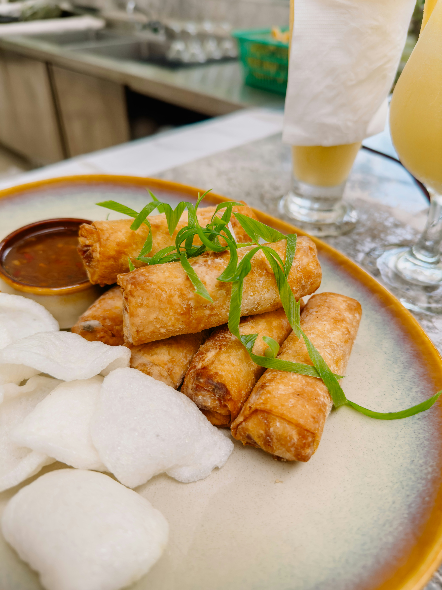

Home
Filipino Lumpia

Photo by uxsj_ph on Unsplash
Description
Lumpiang shanghai is a dish that is eaten on every occasion. The versatility of the dish with the tediousness of the wrapping procedure makes the dish a staple Filipino food. Eat it as a snack, as ulam, or as pulutan, lumpiang shanghai is a must try for every new born Filipino.
Ingredients
- Lumpia Wrapper
- Cooking Oil
- Ground Pork
- Minced Onion
- Minced Carrots
- Chopped Chinese Parsley or kinchay
- Eggs
- Flour
- Garlic Powder
- Salt
- Ground Pepper
Steps
- Mix all the ingredients together and season to taste.
- Adjust the mixture with flour until desireable sticky consistency.
- Place the filling on the lumpia wrapper using a spoon and spread in a line.
- Fold the lumpia wrapper tightly.
- Paste the end of the lumpia with flour mixed with water.
- On medium heat, fry the lumpia until all sides are golden crispy.
- Let the lumpia rest and drain the excess oil.
- Serve with banana ketchup and enjoy the crispy and tasty lumpia!
Recipe from Vanji Moreno on Panlasang Pinoy